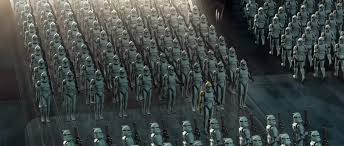
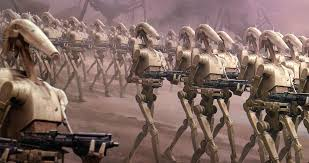
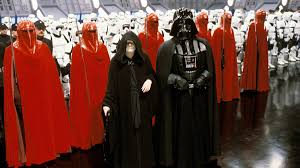
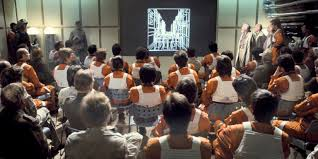

The Grand Army of the Republic was the military force of the Galactic Republic during the Clone Wars. It was composed of clone troopers who were genetically engineered from Jango Fettto be loyal to the Republic.

The Confederacy of Independent Systems was a political entity in the Star Wars universe that opposed the Galactic Republic. It was the primary antagonist in the Clone Wars.

The Empire was a political and military organization in the Star Wars universe that was formed by Emperor Palpatine after the fall of the Galactic Republic.

The Rebel Alliance was a political and military organization in the Star Wars universe that opposed the Galactic Empire. It was the primary antagonist in the Galactic Civil War.